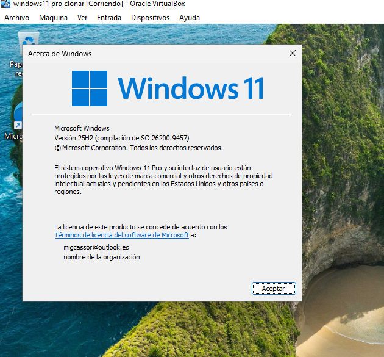
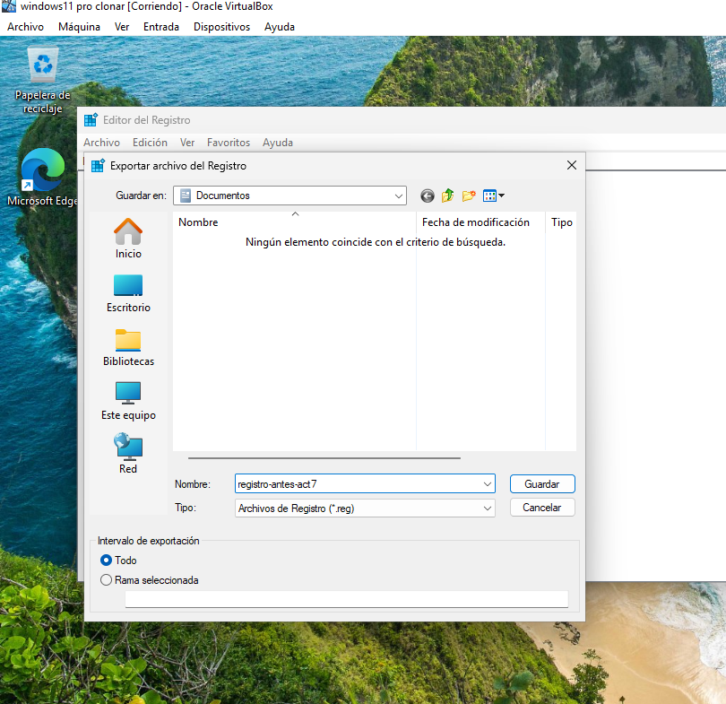
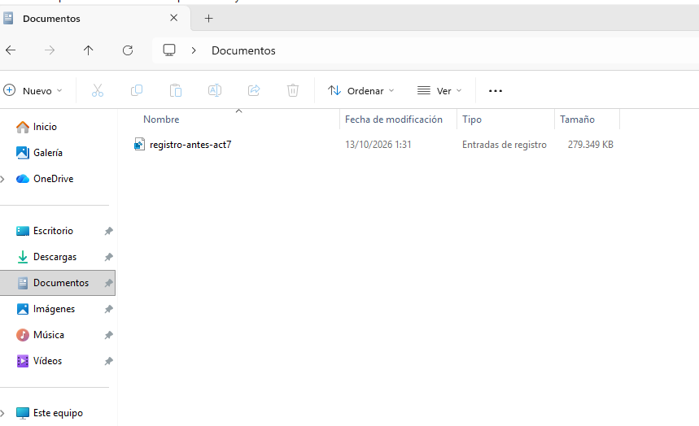

Enunciado: llevar a cabo las modificaciones del registro, comprobar el resultado, realizar previamente una copia de seguridad y restaurar el registro al finalizar. Las capturas documentan la copia de seguridad, los ajustes del registro y su restauración. El apartado de mensajes detallados incluye la configuración y una explicación de su funcionamiento.
Realizar preferiblemente en una máquina virtual. Crear una instantánea con la máquina apagada antes de comenzar. Usar el mismo usuario durante la práctica y anotar los valores originales antes de editarlos.
- Pulsar Win + R, ejecutar
winvery guardar la versión y edición de Windows. - Crear una carpeta
Actividad-1.7para las copias y pruebas. - Abrir
regedity aceptar la elevación de permisos. - Seleccionar Equipo → Archivo → Exportar, elegir el intervalo Todo y guardar
registro-antes-act7.reg. - Exportar también las ramas existentes que se vayan a editar mediante Archivo → Exportar → Rama seleccionada. Si una clave o valor no existe, anotar su ausencia para eliminar únicamente lo creado al restaurar.
| Ajuste | Estado antes de modificar | Datos de la práctica |
|---|---|---|
| InprocServer32 / Predeterminado | Consultar el estado inicial antes de modificar | REG_SZ vacío |
| NoLockScreen | Consultar el estado inicial antes de modificar | DWORD = 1 |
| MenuShowDelay | Valor original documentado en la captura 10 | REG_SZ = 100 |
| VerboseStatus | Consultar el estado inicial antes de modificar | DWORD = 1 |
| DisableStatusMessages | Consultar el estado inicial antes de modificar | Si existe y vale 1, cambiar a 0 |
media/act7-01-version.PNG
Ventana de winver con la edición, versión y compilación.
IMAGEN NO ENCONTRADAmedia/act7-02-copia.PNG
Archivo → Exportar, con intervalo Todo y nombre registro-antes-act7.reg.
IMAGEN NO ENCONTRADAmedia/act7-03-copia-guardada.PNG
Archivo de copia del registro visible en la carpeta de la actividad.
IMAGEN NO ENCONTRADA